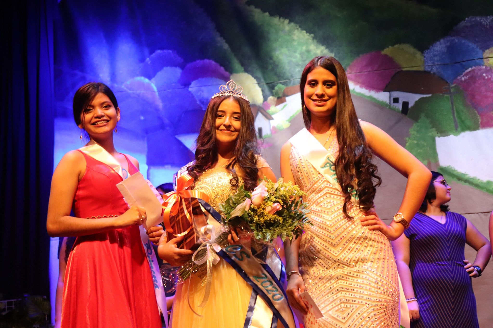

EVENTOS SENIORS
Seniors2020
SUMMER DAY

El Evento de SummerDay, es un dia en el cual los estudiantes del Centro Cultural Sampedrano toman un dia de diversion y relajacion. Esta totalmente organizado por los Seniors de cada año para asi recaudar fondos para su microempresa.
Leer masSENIORS BREAKFAST

El Seniors Breakfast, es un evento organizado para los estudiantes de ultimo año, como parte de su bienvenida. Este año se organizo en las instalaciones del HotelCopantl.
MADRINAS SHOWS
El Madrinas Shows, es el primer evento organizado por los Seniors en el año. En este evento participan una madrina por cada aula, el premio se divide en 3: Ms. Simpatia, Princesa, Madrina.
Leer mas